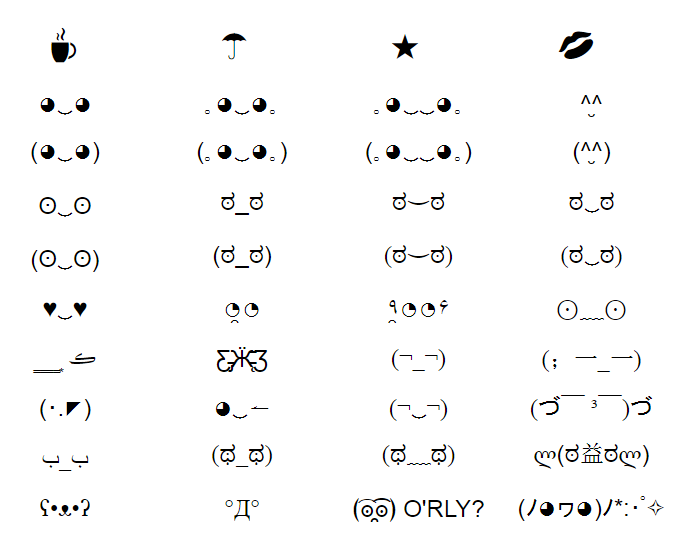
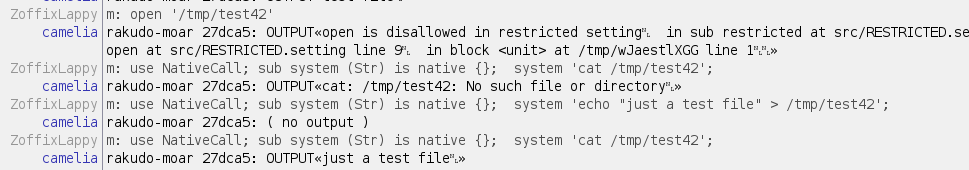

Wow, Perl 6!
by Pete 'Zoffix Znet' Evstratov
This presentation is available at TPM2016.zoffix.com
Question Policy
If you did not understand what I said or what I'm talking about, simply raise your hand.
This presentation is available at TPM2016.zoffix.com
Mind The Unicode:
Perl 6 lets you use fancy-pants Unicode terms and operators that you'll see in this presentation. All of them have "Texas variants" that use ASCII characters only. If you rather use those, see http://docs.perl6.org/language/unicode_texas to find them.
Lazy Lists and Their Uses
Lazy Lists
Let's do something crazy... like create an INFINITE LIST!!
1: my @to-infinity-and-beyond = 0, 2 … ∞;
2: say @to-infinity-and-beyond[1008];
# OUTPUT:
# 2016Lazy Lists
Something more useful: working with a giant file:
1: for '/tmp/4GB-file.txt'.IO.words {
2: .say;
3: last if ++$ == 3;
4: }
5: say "Code took {now - INIT now} seconds to run";
# OUTPUT:
# foo
# bar
# ber
# Code took 0.0126666 seconds to runLazy Lists
Something more useful: working with a giant file
1: .say for '/tmp/4GB-file.txt'.IO.words[0..2];
2: say "Code took {now - INIT now} seconds to run";
# OUTPUT:
# foo
# bar
# ber
# Code took 0.0126666 seconds to runMolding Your Own
Subsets, Custom operators, Muti-dispatch
Subsets
A subset of a type lets you restrict the values it accepts:
1: subset BigPrime of Int where { $_ > 10_000 and .is-prime }
2:
3: sub MAIN ( BigPrime $num ) {
4: say "That's a nice-looking prime number you got there!";
5: }$ perl6 test.p6 3 Usage: test.p6 <num> $ perl6 test.p6 31337 That's a nice-looking prime number you got there! $ perl6 test.p6 100000 Usage: test.p6 <num>
Multi-Dispatch
Multiple subs or methods of same name, but different parameters:
1: subset Prime of Int where *.is-prime;
2: subset BigPrime of Prime where * > 10_000;
3: subset SmallPrime of Prime where * <= 10_000;
4:
5: multi MAIN ( BigPrime $num ) { say "Prime number! Nice and big"; }
6: multi MAIN ( SmallPrime $num ) { say "Puny prime number"; }
7: multi MAIN ( $num ) { say "Gimme primes!"; }$ perl6 test.p6 42 Gimme primes! $ perl6 test.p6 7 Puny prime number $ perl6 test.p6 31337 Prime number! Nice and big
Multi-Dispatch
Multiple subs or methods of same name, but different parameters:
1: class Numbers {
2: multi method id ( Numeric $num ) { say "$num is a number" }
3: multi method id ( $num ) { say "$num is something else" }
4: }
5: Numbers.new.id: π;
6: Numbers.new.id: 'blah';
# OUTPUT:
# 3.14159265358979 is a number
# blah is something else
Multi-Dispatch
Extend method functionality:
1: class Numbers {
2: multi method id ( Numeric $num ) { say "$num is a number" }
3: multi method id ( $num ) { say "$num is something else" }
4: }
5:
6: class SmarterNumbers is Numbers {
7: multi method id ( Numeric $num where * == π ) { say "Mmmm yummy pie!" }
8: }
9:
10: SmarterNumbers.new.id: 42;
11: SmarterNumbers.new.id: π;
12: SmarterNumbers.new.id: 'blah';
# OUTPUT:
# 42 is a number
# Mmmm yummy pie!
# blah is something else
Custom Terms and Operators

Custom Terms and Operators
1: sub infix:<¯\(°_o)/¯> {
2: ($^a, $^b).pick
3: }
4:
5: say 'Coke' ¯\(°_o)/¯ 'Pepsi';
# OUTPUT:
# Pepsi
Operator categories: infix, prefix, postfix, circumfix, postcircumfix and you can also use term for terms.
Custom Terms and Operators
1: sub prefix:<∑> (*@els) { @els.sum }
2: say ∑ 1, 2, 3, 4;
# OUTPUT:
# 1234
Doesn't seem to work well...
Custom Terms and Operators
1: sub prefix:<∑> (*@els) is looser(&infix:<,>) { @els.sum }
2: say ∑ 1, 2, 3, 4;
# OUTPUT:
# 10
Custom Terms and Operators
More examples:
1: sub term:<ξ> { (^10 + 1).pick; }
2: sub postcircumfix:<❨ ❩> ($pre, $inside) is rw {
3: $pre{$inside};
4: }
5:
6: my %hash = :foo<bar>, :meow<moo>;
7: %hash❨'foo'❩ = ξ;
8: %hash❨'meow'❩ = ξ;
9:
10: say %hash;
# OUTPUT:
# foo => 6, meow => 8
Custom Terms and Operators
Overriding existing operators:
1: sub infix:<+> (Int $a, Int $b) { $a - $b };
2: say 2 + 2;
# OUTPUT:
# 0
Custom Terms and Operators
Don't worry... this effect is lexically scoped!
Custom Terms and Operators
Overriding existing operators:
1: class Thingamagig { has $.value };
2:
3: multi infix:<~> (Thingamagig $a, Str $b) {
4: $a.value ~ $b
5: }
6:
7: my $thing = Thingamagig.new: value => 'thingamagig';
8: say 'foo' ~ 'bar';
9: say $thing ~ 'bar';
10: say 'bar' ~ $thing;
# OUTPUT:
# foobar
# thingamagigbar
# barThingamagig<139870715547680>See Color::Operators module from Color distribution for more examples.
Hyperspace
Multi-core processing at a touch of a button
Punch it, Chewie.
Hyper Operators
They look like « and » and you might see them explained with examples like these:
(1, 2) «+« (3)
(1, 2) »+» 1
(1, 2, 3, 4) «+» (1, 2)Hyper Operators
Those won't be multi-threaded for a while, if at all. Instead, the variant I'll talk about is this one:
@foo».barHyper Operators
Let's say you want to uppercase each string in your array and then break that array up into sublists of 3 elements each:
1: my @a = <one two three four five six seven eight nine>;
2: say @a.map({ .uc }).rotor: 3;
# Output:
# ((ONE TWO THREE) (FOUR FIVE SIX) (SEVEN EIGHT NINE))
It's nice and short, but what if you want to call a more time-consuming method on thousands of elements?
Hyper Operators
Just use a hyper operator before the method call:
1: my @a = <one two three four five six seven eight nine>;
2: say @a».uc.rotor: 3;
# OUTPUT:
# ((ONE TWO THREE) (FOUR FIVE SIX) (SEVEN EIGHT NINE))Put » before the dot method call and the method you're calling will be called on individual elements instead. Further methods in the chain will be called on the array (list, etc.), unless they're hypered as well.
BONUS: it's a compiler hint to use multiple threads.
Hyper Seqs
What if you want to "do stuff" on a bunch of things, but on multiple cores? Loop over a HyperSeq.
You get one by calling either:
-
.hyper—preserves element order -
.race—does not preserve element order
Hyper Seqs
Iterate over a 4-element sequence, sleep for 1 second for each element:
1: for (1..4).race( batch => 1 ) {
2: say "Doing $_";
3: sleep 1;
4: }
5: say "Code took {now - INIT now} seconds to run";
# OUTPUT:
# Doing 1
# Doing 3
# Doing 2
# Doing 4
# Code took 1.0090415 seconds to runCode runs for just over 1 second!
Hyper Seqs
.hyper is the same, but it preserves the order of elements in the resulting sequence.
Autothreaded junctions
Logical superposition of values
Code with some logical checks:
1: my @valid = <foo bar baz>;
2: my $what = 'ber';
3: say "$what is not valid" if not @valid.grep: { $what eq $_ };
4: say "A ber or a bar" if $what eq 'ber' or $what eq 'bar';
# OUTPUT:
# ber is not valid
# A ber or a barAutothreaded junctions
1: my @valid = <foo bar baz>;
2: my $what = 'ber';
3: say "$what is not valid" if $what eq none @valid;
4: say "A ber or a bar" if $what eq 'ber' | 'bar';
# OUTPUT:
# ber is not valid
# A ber or a barAutothreaded junctions
| type | constructor | operator | True if ... |
|---|---|---|---|
| all | all | & | no value evaluates to False |
| any | any | | | at least one value evaluates to True |
| one | one | ^ | exactly one value evaluates to True |
| none | none | no value evaluates to True |
Autothreaded junctions
Best part? Junctions are autothreaded, meaning they are a hint to the compiler it can evaluate them on multiple threads!
Promises
I don't always write concurrent code, but when I do, it's THIS simple:
1: start { sleep 3; say "two" };
2: say "one";
3: sleep 5;
4: say "three";
# OUTPUT:
# one
# two
# threePromises
Concurrent / asynchronous code:
1: my @promises = ^3 .map: {
2: start {
3: .say; sleep 1;
4: $_ * 4;
5: }
6: };
7: say "Started! {now - INIT now}";
8: say await @promises;
9: say "All done! {now - INIT now}";
# OUTPUT:
# 0
# 1
# 2
# Started! 0.0196113
# (0 4 8)
# All done! 1.0188611Promises
Start later:
1: Promise.in(5).then: -> $v { say "It's been {now - INIT now} seconds!" };
2: sleep 7;
3: say "Ran for {now - INIT now} seconds"
# OUTPUT:
# It's been 5.031918 seconds!
# Ran for 7.0160562 secondsSupplies
Asynchronous data streaming:
1: my $supplier = Supplier.new;
2:
3: $supplier.Supply .tap: -> $v { say "Original: $v" };
4: $supplier.Supply.map( * × 2 ).tap: -> $v { say " Double: $v" };
5: $supplier.Supply.grep( * % 2 ).tap: -> $v { say " Odd: $v" };
6:
7: $supplier.emit: $_ for ^3;
# OUTPUT:
# Original: 0
# Double: 0
# Original: 1
# Double: 2
# Odd: 1
# Original: 2
# Double: 4Supplies
Events at interval inside an event loop (react):
1: react {
2: whenever Supply.interval: 2 -> $v {
3: say "$v: {now - INIT now}";
4: done if $v == 2;
5: }
6: whenever Supply.interval: 1 -> $v { say " 1 sec: {now - INIT now}"; }
7: }
# OUTPUT:
# 0: 0.026734
# 1 sec: 0.0333274
# 1 sec: 1.02325708
# 1: 2.027192
# 1 sec: 2.0276854
# 1 sec: 3.0234109
# 2: 4.0324349Channels
A thread-safe queue:
1: my $c = Channel.new;
2: start {
3: loop { say "$c.receive() at {now - INIT now}" }
4: }
5: await ^10 .map: -> $r {
6: start {
7: sleep $r;
8: $c.send: $r;
9: }
10: }
11: $c.close;
# OUTPUT:
# 0 at 0.01036314
# 1 at 1.0152853
# 2 at 2.0174991
# 3 at 3.020067105
# 4 at 4.01953470
# 5 at 5.0195884
# 6 at 6.0205915
# 7 at 7.020651
# 8 at 8.02339744
Grammars!
An easy way to parse things
Grammars!
An easy way to parse things
1: grammar MyGrammar {
2: token TOP { <sign> <digits> <decimal>? }
3: token sign { <[+-]>? }
4: token digits { \d+ }
5: token decimal { \. <digits> }
6: }
7:
8: class MyActions {
9: method sign ($/) { $/.make: $/.chars ?? ~$/ !! '+' }
10: method TOP ($/) { $/.make: $<sign>.made ~ ($<digits> + 42 ) ~ $<decimal> }
11: }
12:
13: say MyGrammar.parse('250.42', actions => MyActions).made;
# OUTPUT:
# +292.42Grammars!
Useful modules:
-
Grammar::Debugger and Grammar::Tracer—justuseone of the modules in the distro to get debug output for your grammars -
Grammar::BNF—convert BNF to Perl 6 grammars automagically!!
Whatever, man!
Whatever Code, Meta operators, Model6 Object Model, Sets, bags, and mixes
Whatever Code
Use WhateverStar as a quick way to get a closure with arguments:
1: say (* + 2)(2);
2: say <1 25 3 100>.grep: * > 5;
3: subset Primes of Int where *.is-prime;
4:
5: # same as
6:
7: say sub { $^a + 2 }(2);
8: say <1 25 3 100>.grep: { $_ > 5 };
9: subset Primes of Int where { $_.is-prime };Whatever Code
Each WhateverStar represents the next positional argument. You can't use WhateverStar to refer to the same argument more than once:
say ( * + * + * )(2, 3, 4);
# OUTPUT:
# 9Whatever Code
n-at-a-time .map never looked simpler:
say ^12 .map: * + * + *;
# OUTPUT:
# (3 12 21 30)Whatever Code
Look, ma! The entire Fibonacci sequence in a lazy list!
1: my @fibonacci = 0, 1, * + * … *;
2: say @fibonacci[42];
# OUTPUT:
# 267914296Psst, there's HyperWhatever!
Just sayin'...
1: say ( ** + 2 )(^10);
2: say ( * + 2 )(^10);
# OUTPUT:
# (2 3 4 5 6 7 8 9 10 11)
# 2..^12Meta Operators
Same as if you placed the operator that is inside the brackets between each element in the list:
1: say [+] 1, 2, 3; # 6
2: say [*] 1..5; # 120
3:
4: my @numbers = (2, 4, 3);
5: say [<] @numbers; # FalseMeta Operators
Trangle Reduce: use operator between two successive elements, take the result and use the operator between it and the next element:
1: say [\+] 1, 2, 3;
2: say [\*] 1..5;
# OUTPUT:
# (1 3 6) ## Breaking it down: 1 (1), 1 + 2 (3), 3 + 3 (6)
# (1 2 6 24 120)Model6 Object Model
1: class Foo {
2: has $.attr;
3: has $.attr-rw is rw;
4: has $.attr-required is required;
5: has $!attr-private = 42;
6:
7: method public { say $!attr + $!attr-private; }
8: method !private { say 'secret' }
9: }
10:
11: my $foo = Foo.new: :attr<public>,
13: :attr-required<yup-here-it-is>;
14:
15: say $foo.attr;
16: say $foo.public;
17: $foo.attr-rw = 42;Model6 Object Model
You can specify types and subset restrictions too:
1: class Foo {
2: subset Primes of IntStr where *.is-prime;
3:
4: has Int $.attr;
5: has Str $.attr-rw is rw where *.chars < 5;
6: has Primes $.attr-required is required;
7: }Model6 Object Model
Roles—safely add behaviour to your classes:
1: role Drawable {
2: method draw { say "Line from $.x to $.y" };
3: }
4: class Line does Drawable {
5: has $.x;
6: has $.y;
7: }
8: my $line = Line.new: :42x, :75y;
9: $line.draw;
# OUTPUT:
# Line from 42 to 75Model6 Object Model
Roles—safely add behaviour to your classes:
1: role Drawable {
2: method draw { say "Line from $.x to $.y" };
3: }
4: role OtherDrawable {
5: method draw { say "It's a draw!" };
6: }
7: class Line does Drawable does OtherDrawable {
8: has $.x;
9: has $.y;
10: }
11: my $line = Line.new: :42x, :75y;
12: $line.draw;
# OUTPUT:
# ===SORRY!=== Error while compiling /home/zoffix/CPAN/TPM-2016/test.p6
# Method 'draw' must be resolved by class Line because it exists in multiple
# roles (OtherDrawable, Drawable) at /home/zoffix/CPAN/TPM-2016/test.p6:7
MOP: Meta Object Protocol
Introspection and the Perl 6 Object System
MOP: Meta Object Protocol
1: #| Just 'cause
2: class TestStuff {};
3: my $x = TestStuff.new;
4: say $x.WHAT; # (TestStuff) # The type object of the type
5: say $x.WHICH; # TestStuff|179689128 # The object's identity value
6: say $x.WHO; # TestStuff # The package supporting the object
7: say $x.WHERE; # -1225903068 # The memory address of the object (not stable)
8: say $x.HOW; # Perl6::Metamodel::ClassHOW.new # The metaclass object
9: say $x.WHY; # Just 'cause # The attached Pod value.
10: say $x.DEFINITE; # True # Returns True for instances and False for type objectsMOP: Meta Object Protocol
1: Int.^add_method('x', -> $class, $v { say $v });
2: constant A := Metamodel::ClassHOW.new_type( name => 'A' );
3: A.^add_method('x', -> $class, $v { say $v });
4: #A.^compose;
5:
6: A.x: 'A class';
7: Int.x: 'Int class';Sets, Bags, and Mixes
Immutable:
-
Set—collection of distinct objects -
Bag—collection of distinct objects with integer weights -
Mix—collection of distinct objects with real weights
Sets, Bags, and Mixes
Mutable:
-
SetHash—collection of distinct objects -
BagHash—collection of distinct objects with integer weights -
MixHash—collection of distinct objects with real weights
Sets, Bags, and Mixes
Counting things? A Bag will do:
.say for 'This is just a sentence'.comb.Bag;
# OUTPUT:
# n => 2
# a => 1
# => 4
# c => 1
# j => 1
# s => 4
# T => 1
# e => 3
# t => 2
# i => 2
# u => 1
# h => 1Sets, Bags, and Mixes
Write concise code with set operators:
1: my $valid = set <foo bar ber boor>;
2: my @given = <foo meow bar ber>;
3:
4: say ‘Something's wrong’ unless @given ⊆ $valid;Sets, Bags, and Mixes
Write concise code with set operators:
1: say <foo bar> ∪ <bar meow>; # Union operator
2: say <foo bar> ⊖ <bar meow>; # Symmetric set difference operator
# OUTPUT:
# set(foo, bar, meow)
# set(foo, meow)See the docs for full list of operators.
Simple Things:
Hacking on the Perl 6 Compiler
As crazy as it sounds...
Perl 6 is [mostly] written in Perl 6
Which means...
Regular Perl 6 users can make Perl 6 better!
Polyglot
Use other languages from within Perl 6!
NativeCall
Use C libraries without writing any C code!!
(more or less)
NativeCall
Standard C library:
1: use NativeCall;
2: sub fork is native {};
3: fork;
4: say $*PID;
# OUTPUT:
# 11274
# 11275BTW: A Safety Tip
There's system in standard C library:

NativeCall
Using a C library:
1: class STMT is export is repr('CPointer') { };
2: sub sqlite3_column_text(STMT, int32)
3: returns Str
4: is native('sqlite3', v0) { };NativeCall
int8 (int8_t in C, also used for char)
int16 (int16_t in C, also used for short)
int32 (int32_t in C, also used for int)
int64 (int64_t in C)
uint8 (uint8_t in C, also used for unsigned char)
uint16 (uint16_t in C, also used for unsigned short)
uint32 (uint32_t in C, also used for unsigned int)
uint64 (uint64_t in C)
long (long in C)
longlong (long long in C, at least 64-bit)
num32 (float in C)
num64 (double in C)
Str (C string)
CArray[int32] (int* in C, an array of ints)
Pointer[void] (void* in C, can point to all other types)
bool (bool from C99)
size_t (size_t in C)Inline::Perl5
Use any Perl 5 module in Perl 6!
1: use Inline::Perl5;
2: use Mojo::DOM:from<Perl5>;
3:
4: my $dom = Mojo::DOM.new: '<p><b>This is awesome</b>, trust me</p>';
5:
6: say $dom.at('b').all_text;
# OUTPUT:
# This is awesomeThank You!
Questions?